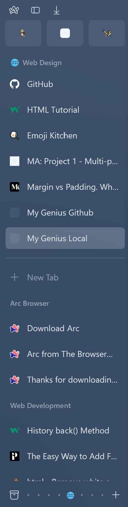
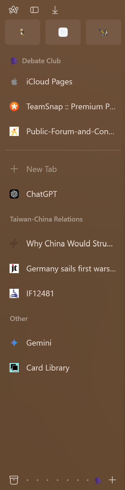
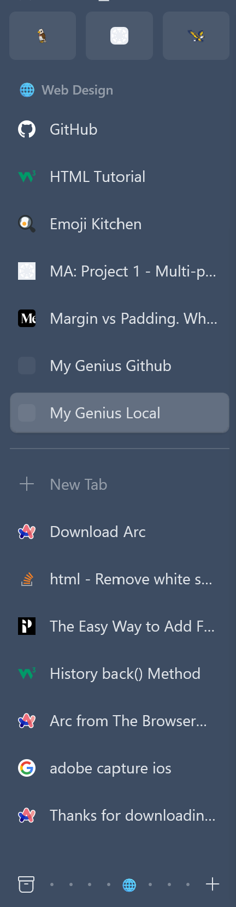
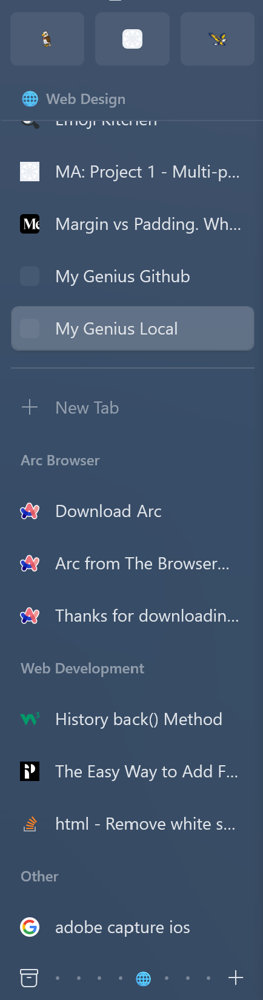
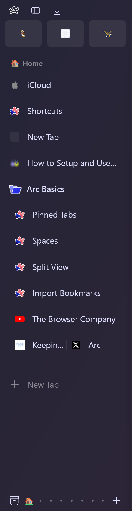

â €Arc for Windows Reveal
â €Arc for Windows RevealGallery
Here are some screenshots of Arc on Windows and its features.
The first set shows different spaces that I have. The second shows what the "Tidy Tabs" feature does with just the click of a button. The final one shows what folders look like.
Different Spaces:⠀⠀⠀⠀⠀⠀⠀Tidy Tabs Before and After:⠀⠀A Space with a Folder:
  ⠀⠀⠀⠀⠀⠀⠀   ⠀⠀⠀⠀⠀⠀⠀⠀⠀⠀ 